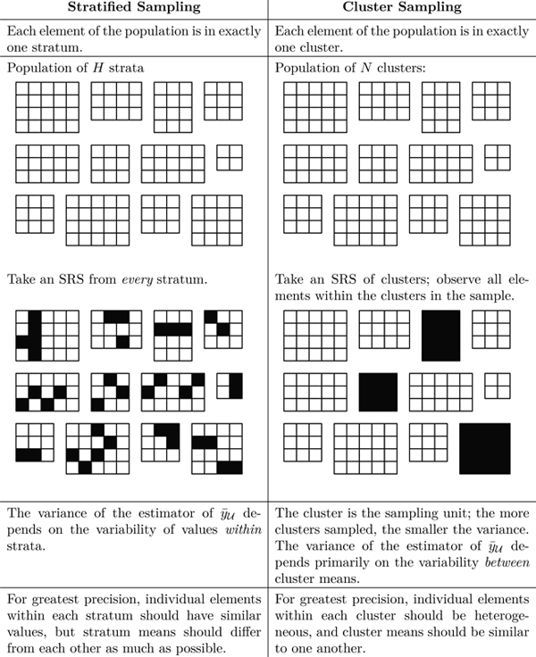

library(here); library(tidyverse);library(knitr)
library(sampling); library(survey)Cluster Sampling
Selecting groups at . Lohr Ch 5.
Introduction
Let’s say we want to find the number of bicycles owned within a community of 10,000 households. We have several options for picking a sample:
- Obtaining a SRS of 400 households
- Stratifying households into groups then choosing a SRS from these groups
- Separate the population into blocks of 500 and then randomly select 20 of these blocks and survey every household that is part of the blocks chosen
This last option is an example of cluster sampling. In cluster sampling, we have primary sampling units(psus), or clusters, which are represented by the blocks. We also have secondary sampling units(ssus) which are the households within the blocks. In an SRS, the units sampled are the observed elements, but in a cluster sample, the sampling units are our clusters. In a cluster sample, our universe is the population \(N\) clusters.
Cluster of 400 households vs SRS of 400 households?
- The cluster sample would result in less precision because of our blocks. Some might be composed of mainly families(who are more likely to have bikes) while others are mainly older people.
- In this case, clusters won’t be as representative of the population as a SRS would.
- Can be cheaper and faster than other sampling methods

Notation & Formulas
| Symbol | Formula | Description |
|---|---|---|
| \(y_{ij}\) | measurement for the \(j\)th element in \(i\)th psu | |
| \(N\) | number of clusters (psus) in the population | |
| \(M_{i}\) | number of ssus in psu \(i\) | |
| \(M_{0}\) | \(\sum_{i=1}^{N} M_{i}\) | total number of ssus in the population |
| \(t_{i}\) | \(\sum_{j=1}^{M_{i}} y_{ij}\) | total in psu \(i\) |
| \(t\) | \(\sum_{i=1}^{N} t_{i}= \sum_{i=1}^{N} \sum_{j=1}^{M_{i}} y_{ij}\) | population total |
| \(S_{t}^{2}\) | \(\frac{1}{N-1} \sum_{i=1}^{N} (t_{i} - \frac{t}{N})^2\) | population variance of the psu totals |
| Symbol | Formula | Description |
|---|---|---|
| \(\bar{y}_{\mu}\) | \(\frac{1}{M_0} \sum_{i=1}^N \sum_{j=1}^{M_i} y_{ij}\) | population mean |
| \(\bar{y}_{i\mu}\) | \(\frac{1}{M_i} \sum_{j=1}^{M_i} y_{ij} = \frac{t_i}{M_i}\) | population mean in psu \(i\) |
| \(S^2\) | \(\frac{1}{M_0-1} \sum_{i=1}^N \sum_{j=1}^{M_i} (y_{ij}-\bar{y}_{\mu})^2\) | population variance (per ssu) |
| \(S_{i}^{2}\) | \(\frac{1}{M_i-1} \sum_{j=1}^{M_i} (y_{ij}-\bar{y}_{\mu})^2\) | population variance within psu \(i\) |
| Symbol | Formula | Description |
|---|---|---|
| \(y_{ij}\) | Measurement for\(j\)th element in \(i\)ht psu | |
| \(N\) | Number of clusters (psus) in the population | |
| \(M_i\) | Number of ssus in psu \(i\) | |
| \(M_{o}\) | \(\sum_{i=1}^NM_i\) | Total number of psus in the popultion |
| \(t_i\) | \(\sum_{j=1}^{M_i}y_{ij}\) | Total in psu \(i\) |
| \(t\) | \(\sum_{i=1}^Nt_i = \sum_{i=1}^N\sum_{j=i}^{M_i}y_{ij}\) | Popultion Total |
| \(S_i^2\) | \(\frac{1}{N-1} \sum_{i=1}^N(t_i-\frac{t}{N})^2\) | Popultion variance of the psu totals |
Why use Cluster Sampling?
- Constructing a sample frame list may be expensive, difficult, or impossible.
- Making a sampling frame of all honeybees in a region would be impossible-you cannot enumerate them, or even be sure how many there are (N)
- Making a sampling frame of all trees in a region is possible, however it may be extremely time consuming, and therefore expensive.
- The population may be widely distributed geographically or appear in natural clusters.
- Households or schools can appear in natural clusters
- If your target population is nursing home residents in the US, it would be very hard to take an SRS of all nursing home residents, and then travel to each one individually. Taking a cluster sample of a few nursing homes and then taking observations from everyone in them would be less expensive and time consuming.
This is because members of the same cluster tend to be very similar, and sampling everyone in the cluster results in the same information being repeated rather than learning new information.
Most large surveys usually use cluster sampling, most likely because of the low costs and convenience compared to other sampling methods
To increase the precision of the clusters, survey conductors could group the population primary sampling units (the clusters) into stratas and select a probability sample of psus within each stratum.
When clusters are Ignored
Do not analyze cluster samples like you would analyze an SRS. Doing so can lead to statistics from the survey appearing more precise than they actually are.
Studies in education
Due to the natural clustering of students within a classroom, educational studies often involve cluster sampling.
Consider a study where a school (the population) is stratified by classroom. 32 professors (16 male and 16 female) were selected based on the subject they taught, years of experience, and tenure status. In this example, the classrooms are the clusters.
Questionnaires went out to all students in each of the selected classrooms. The researchers wanted to see if students evaluated male and female professors differently.
- The sample size in this study is \(n = 32\), the number of faculty studied
- Note this is not the total number of students who returned the questionnaire.
- Because the students in each classroom are likely to have some agreement in the rating they assign to their professor, they can not be treated as independent.
- If the students are treated as independent, the variance from the sample will be smaller than the real value and differences between clusters will be declared statistically significant more often than they should be.
One-Stage Clustering Sampling
Equal size clusters
- Each psu has the same number of elements; \(M_{i} = m_{i} = M\).
- Often can be found in agriculture or industrial sampling.
- \(t_{i}\) is the total for all elements in psu \(i\).
- \(t_{i}\) is known for sampled households, since data is collected on both individuals. (E.g. \(Var(t_{i})=0\))
➡️ Treat the psu means or totals as observations, and ignore the individual elements. We now have an SRS of \(n\) data points.
Thus we can use the same SRS formulas to estimate the total and mean, however this is an SRS of \(n\) psu’s, not an SRS of \(nM\) observational units. So the \(df\) needed to create a Confidence Interval is \(n-1\).
To estimate the population total \(t\) or average \(\mu\), we can use the following estimators and variances:
\[ \hat{t} = \frac{N}{n}\sum_{i \in S}t_{i} \qquad s_{t}^{2} = \frac{1}{n-1}\sum_{i \in S}\Big(t_{i} - \frac{\hat{t}}{N}\Big)^2 \]
and \[ \hat{\bar{y}} = \frac{\hat{t}}{NM} \qquad V(\hat{\bar{y}}) = \Big(1-\frac{n}{N}\Big)\frac{s^{2}_t}{nM^2} \]
Estimate the income in a two person households
Consider individual incomes (\(y_{ij}\)) for each of \(j=1,2\) persons in the 3 sampled households out of the 50 in the population.
hhi <- data.frame(
household = c(1:3),
yi1 = c(37638, 69012, 30001),
yi2 = c(79999, 86753, 54321)
)
kable(hhi, align = 'c')| household | yi1 | yi2 |
|---|---|---|
| 1 | 37638 | 79999 |
| 2 | 69012 | 86753 |
| 3 | 30001 | 54321 |
First define our known values: N = 50, n = 3, M = 2.
The total household income \(t_i\) is calculated as the sum of the individual incomes within each cluster \(\sum_j y_{ij}\).
hhi$ti <- hhi$yi1 + hhi$yi2
hhi household yi1 yi2 ti
1 1 37638 79999 117637
2 2 69012 86753 155765
3 3 30001 54321 84322The estimated mean is
t.hat <- (50/3)*sum(hhi$ti)
(ybar.hat <- t.hat / (50*2))[1] 59620.67with variance
s2.t <- (1/(3-1))*sum((hhi$ti - t.hat/50)^2)
(var.ybar.hat <- (1 - 3/50)*(s2.t/(3*2^2)))[1] 100106551Calculate CI.
crit.t <- qt(.975, 3-1)
ci.low.mu <- ybar.hat - crit.t*sqrt(var.ybar.hat)
ci.hi.mu <- ybar.hat + crit.t*sqrt(var.ybar.hat)We can be 95% confident that the average population income for a household of two people is contained in the interval ($16,571, $102,670.
Example: Average GPA in a dorm
A student wants to estimate the average GPA in their dorm. Obtaining a listing of all students in the hall and conducting an SRS would take a lot of time. Instead, since each of the 100 suites in the hall have 4 students, the student randomly samples 5 suites and collects GPA data for each student in the suite.
Using functions from the sampling package, estimate the average GPA for all students living in that dorm, with a proper 95% CI. Interpret your interval.
gpa <- readr::read_csv(here::here("data", "gpa.csv"))
head(gpa)# A tibble: 6 × 3
suite gpa wt
<dbl> <dbl> <dbl>
1 1 3.08 20
2 1 2.6 20
3 1 3.44 20
4 1 3.04 20
5 2 2.36 20
6 2 3.04 20The data was recorded in long format – this is the format needed for analysis. The table in the book is formatted for human eyeball consumption, not for analysis.
- Set the survey design. Here we finally use the
idargument to identify the variable containing the psu’s. Printing out the objectgpa.designlets us confirm that it is being recognized as a 1 stage cluster design with 5 clusters.
(gpa.design <- svydesign(id = ~suite,
weights = ~wt,
fpc=~rep(100,20),
data=gpa) )1 - level Cluster Sampling design
With (5) clusters.
svydesign(id = ~suite, weights = ~wt, fpc = ~rep(100, 20), data = gpa)- Call
surveymeanand CI.
(dorm.gpa.mean <- svymean(~gpa, gpa.design)) mean SE
gpa 2.826 0.1637(df <- degf(gpa.design)) # Extract degrees of freedom[1] 4confint(dorm.gpa.mean, level=.95, df=4) 2.5 % 97.5 %
gpa 2.371593 3.280407We can be 95% confident that the average GPA for students living in this dorm is contained in the interval 2.37 to 3.28.
Solution
yay.math <- read_csv(here::here("data/algebra.csv"))
head(yay.math) # A tibble: 6 × 3
class Mi score
<dbl> <dbl> <dbl>
1 23 20 57
2 23 20 90
3 23 20 56
4 23 20 57
5 23 20 46
6 23 20 55a)
class: Class number. This is apsu.Mi: Number ofssusin eachpsu.score: Test score for eachssu
b)
ggplot(yay.math, aes(y=score, x=as.factor(class))) + geom_boxplot()
The distribution of test scores are similar-ish. Most range between 50 and 75, with class number 51 having the highest median, but also nearly the lowest minimum. The variances of classes 39, 41, and 44 have the smaller variance compared to the other classes.
c)
length(unique(yay.math$class))[1] 12table(yay.math$class)
23 37 38 39 41 44 46 51 58 62 106 108
20 26 24 34 26 28 19 32 17 21 26 26 There are 12 different classes, with class sizes ranging from 17 in class number 58 to 34 in class number 39.
d) Survey weights were not included, so those need to be added. For a single cluster sample, the weights are calculated as \(w_{ij} = \frac{N}{n}\), the number of clusters in the population divided by the number of clusters in the sample. Here this is 187/12.
yay.math$wt <- 187/12
yay.math$fpc <- 187
yay.math.design <- svydesign(id = ~class, weights = ~wt,
fpc = ~fpc, data = yay.math)
yay.math.design1 - level Cluster Sampling design
With (12) clusters.
svydesign(id = ~class, weights = ~wt, fpc = ~fpc, data = yay.math)e)
svymean(~score, yay.math.design) mean SE
score 62.569 1.4916svymean(~score, yay.math.design) %>% confint(df = degf(yay.math.design)) 2.5 % 97.5 %
score 59.28562 65.8515The population average math score is 62.6 (95% CI 59.3 - 65.9).
Two-Stage Clustering Sampling
Sometimes measurements on individual ssus are not easy to obtain, or the ssus within a psu are so similar that collecting data on all of them is a waste of resources.
Two-stage clustering employes another SRS of ssus within each psu. Or, more formally;
- Select an SRS of \(n\) psus from the population of N psus.
- Select an SRS of ssus from each selected psu, where \(m_{i}\) is the number of ssus selected from the \(i^{th}\) psu.
The point estimates for parameters such as the total or mean will still be calculated the same, but the variance equations now need to take into consideration the variance of the SRS of psus, AND the variance of the SRS of the ssus. Another way to think about it is that we have within-psu and a between-psu components to the variance now.
This means we can use ANOVA to calculate and understand the ratio of the between and within variance components.
Survey weights
Since the two SRS’s are independent, we can calculate the inclusion probability as the multiplication of the inclusion probability at each stage.
- Stage 1: \(P\)(\(i\)th psu selected) = \(\frac{n}{N}\).
- Stage 2: \(P\)(\(j\)th ssu selected | \(i\)th psu selected) = \(\frac{m_i}{M_i}\)
Since the weights are the reciprocal of the inclusion probability, \[ w_{ij} = \frac{N}{n}\frac{M_{i}}{m_{i}} \]
Example: More estimation of math scores.
The file schools.csv contains data from a two-stage sample of students from hypothetical classes. The final weights are provided in the variable finalwt.
- Create side by side boxplots for the math score for sampled schools. Which do you think is larger, the within or between cluster variance?
- Create an ANOVA table for this example. Is your interpretation from the graph upheld by this analysis?
- Estimate with proper 95% CI the average math score for the population of students under consideration. Do not include a value for the
fpcin this example.
schools <- read_csv(here::here("data/schools.csv"))a)
ggplot(schools, aes(y=math, x=as.factor(schoolid))) +
geom_boxplot() + geom_jitter(width=.1)
There is so much overlap in the distributions of math score across the schools. I think the across cluster variance may be more than the within cluster variance. Except perhaps school 35 and 75. Scores from those schools seem to be more closer within their own school.
b)
aov(math ~ as.factor(schoolid), data = schools) %>% summary() Df Sum Sq Mean Sq F value Pr(>F)
as.factor(schoolid) 9 7018 779.8 7.583 1.79e-09 ***
Residuals 190 19538 102.8
---
Signif. codes: 0 '***' 0.001 '**' 0.01 '*' 0.05 '.' 0.1 ' ' 1The within cluster variation (MSE = 102) is smaller than the between cluster variation (MSB = 779.8). This does not match my interpretation of the prior graph.
c)
sch.dsgn <- svydesign(id = ~schoolid, weights = ~finalwt, data = schools)
svymean(~math, sch.dsgn) mean SE
math 33.123 1.7599svymean(~math, sch.dsgn) %>% confint(df = degf(sch.dsgn)) 2.5 % 97.5 %
math 29.14179 37.1041The average math score in this example is 33.1 with 95% CI 29.1-37.1
Summary of One vs Two Stage Clustering

One Stage Clustering
- All you do is carry out an SRS on all available PSUs from your population of \(N\) PSUs. Then subsequently establish a census.
- This provides us the variance across clusters
Two Stage Clustering
- In two stage clustering the only additional step is to take an SRS of size \(m_i\) within each already sample \(i\)th PSU.
- This finds the variance within clusters
Unbiased Estimate for \(t\)
\[t=w_{ij}\sum y_{ij}=\sum\frac{NM_i}{nm_i}y_{ij}\]
Note: The same formula is applicable to both one and two stage clustering because, if you think about it, one stage clustering is just a special case of two stage clustering. That being the case where \(M_i=m_i\).
Systematic Sampling
Systematic Sampling is a special case of Cluster Sampling
Method
- Determine a desired sample size, X
- Determine the number of elements in the target population
- Chose a number of desired psus, Y
- Now draw an element and every Xth elements afterwards
- Do that Y times so that you are left with Y psus
- Then SRS one of the psus
Attributes to Note
- Systematic sample is more precise than SRS when the variance within the PSUs are larger than the variance of the total population.
- In systematic sampling, we usually only SRS one psu, meaning n=1, so we cannot find the variance of population estimates.
- So, we need to identify the structure of the population of interest to estimate the variance
Example: Choosing a Systematic Sample
Suppose we want to take a sample of 3 from a population of 12 that is numbered 1-12.
- Choose a random number between one and 4 and draw that element and also every fourth element after that.
- Do that until all your suss have been grouped
- Now we have four psus each containing 3 ssus
- Take an SRS of one psu to use as your sample.
Order matters
How does the order of the sampling frame influence estimates?
The sampling frame is in random order
- Systematic sampling is likely to produce a sample that behaves like an SRS.
- Oftentimes, the ordering of the population is unrelated to the characteristic of interest.
- We can use SRS results and formulas to calculate the variance of a systematic sample.
The sampling frame is increasing or decreasing in order
- Systematic sampling is likely to be more precise than SRS.
- Forces the sample values to be more spread out; an SRS could consist of mostly low or high values.
- Can use SRS formulas to calculate SE, but it will likely be an overestimate.
The sampling frame has a periodic pattern
- Less precise than SRS
- Most dangerous when the population is cyclical or periodic order, and the sampling interval coincides with a multiple of the period
If periodicity is a concern, using interpenetrating systematic samples may be beneficial.
- Take multiple systematic samples from the population, then use formulas for cluster sampling to estimate the desired point estimates.
Example: sampling toxic waste
Many dumps and landfills contan hazardous waste that was sealed when it was deposited, however may have began leaking since it was dumped. Since we dont know where the waste was deposited, in order to know if there is any leakage of waste, a systematic sample can be used.
- Choose a point in a random area, and construct a grid containing that point so that the grid points are equal distance away from each other
- take soil samples from each to see if there are traces of hazardous waste

Pros and Cons of Systematic Sampling in this example: forces even coverage of the reason, and it is easy to implement in the field. If you have little knowledge about the exact location of what you are looking for.
As with any grid sample, you need to worry about whether or not the hazardous waste is reglarly placed so that the grid would miss all of it.
- Used if we are concerned about periodicity
- Any of these changes force more coverage of the total population vs a systematic sample
- Instead of taking one systematic sample from our population, we take several
- In this case, each systematic sample acts as a cluster
- We can use formulas for cluster samples to estimate variance
Clusters of Equal Sizes (Theory)
This section compares the analysis of variance in cluster sampling compared to stratified and SRS.
- Cluster sampling almost always has less precision for the estimates than from an SRS with the same amount of elements!
- In one-stage cluster sampling, the variability of an unbiased estimator depends on the between psu variability.
- We can use an ANOVA table to explore the breakdown of the source of variance into between psus and within psus.
MSB (Mean Squared Between Clusters)
- A measure of between cluster variability
- In stratification, increase in MSB increases precision
- In clustering, increase in MSB decreases precision
- MSB is relatively large because it measures the cluster-to-cluster variability. Also, the MSB can be too large when unmeasured factors affect the overall mean for a cluster
MSW (Mean Squared Within Clusters)
- A measure of within cluster variability
- When clusters are relatively homogeneous, the MSW will be small
ICC (Intraclass Correlation Coefficient)
Let’s us know how similar elements are in the same cluster; a measure of homogeneity within the cluster
- With a positive ICC, elements within the same cluster are similar. A negative ICC indicates the elements within a cluster to not be similar; elements are dispersed more.
- Cluster sampling is less efficient than SRS of elements
- With a negative ICC, then the elements within a cluster are dispersed more than a randomly chosen group
- Naturally occurring clusters is the cause for an ICC to be positive, usually not negative
R Squared
Adjusted \(R^2\) is for an alternative measure of homogeneity in general populations.
- \(R^2\) can be used to measure homogeneity because its interpretation in linear regression
- When the psus are homogeneous then the psu means will be highly variable relative to the variation within psus, and \(R^2\) will be high.
Designing a Cluster Sample
A psu that is too large may eliminate the cost related benefits of clustering
- Step 1: What overall precision is needed?
- Step 2: What size should the psus be?
- Step 3: How many ssus should be sampled in each psu selected for the sample?
- Step 4: How many psus should be sampled?
Any survey design must know the answer to question 1, and to answer questions 2-4 the cost of sampling a psu for potential psus, the cost of sampling a ssu, and a measure of homogeneity (ICC) for potential sizes of psu must be known.